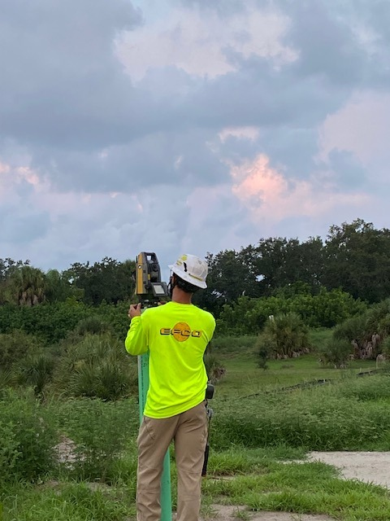
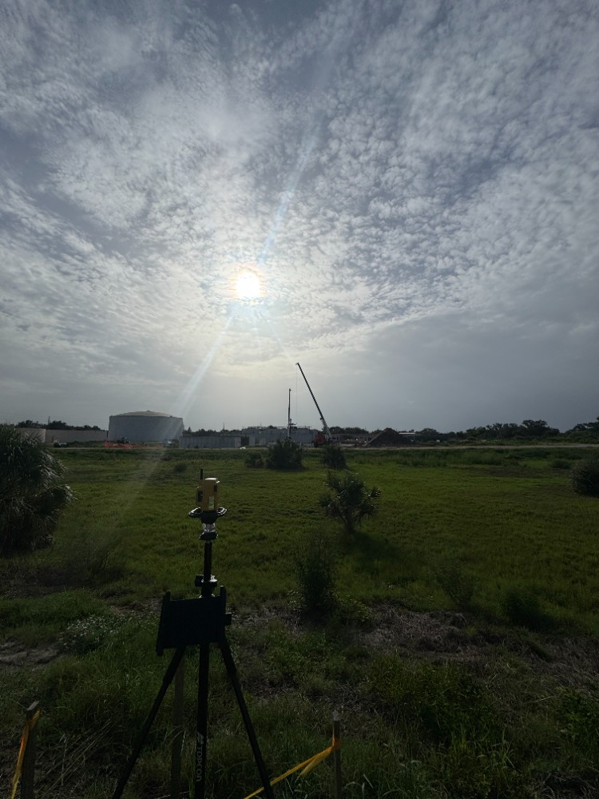
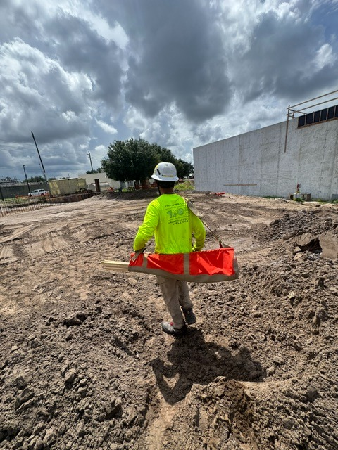
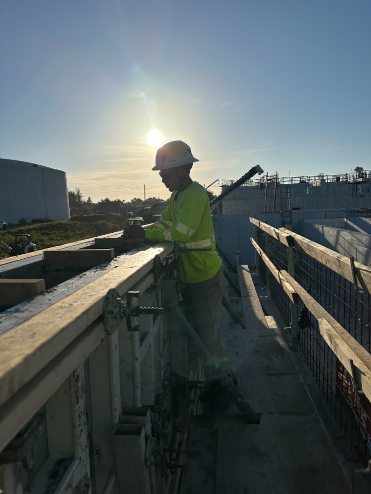

Internship: As-Built Survey
Another intern and I surveyed and recorded as-built points on the Venice Gardens wastewater treatment plant, including the whole MBR. We checked the real location of each point after construction so the records match what was built.
Photos




